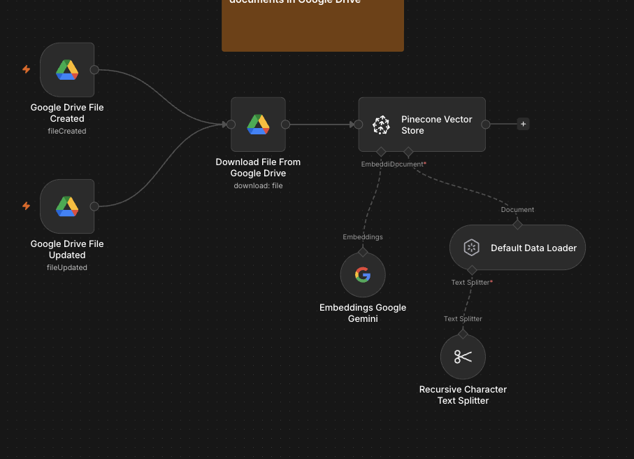
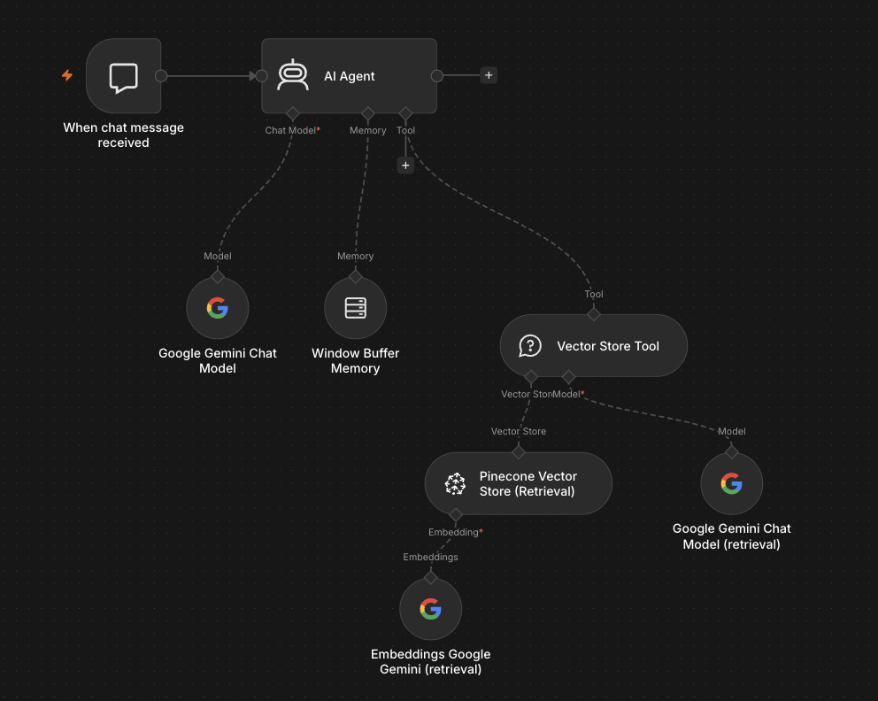

Hard-to-find files
Employees may know the answer exists but not which document, folder, or section contains it.
Working prototype
Company policies, SOPs, and reference files often already contain the right answers. The problem is that employees cannot find those answers quickly, so the same questions keep landing on one knowledgeable person. This prototype turns a shared Google Drive folder into a searchable internal reference employees can ask in plain language.
Overview
Employees ask a question through chat. The workflow searches the available company documents, retrieves the most relevant sections, and uses those sections to prepare a concise answer.
The business problem
A shared folder can store years of policies and operating knowledge without making that information easy to use. Search depends on filenames and memory, while repeated questions continue to interrupt experienced employees.
Employees may know the answer exists but not which document, folder, or section contains it.
The same policy and process questions repeatedly land on managers or experienced team members.
Different employees can interpret or remember the same policy differently.
New hires depend on other people to explain information that is already documented.
A useful assistant must recognize new and updated files instead of relying on a one-time upload.
If the files do not contain an answer, the system should say so instead of inventing a company rule.
Design boundaries
Solution
The first pipeline watches a selected Google Drive folder. When a file is created or updated, the workflow downloads it, breaks the content into searchable sections, creates a searchable representation, and stores those sections in the knowledge index.
The second pipeline receives an employee question through chat. It searches the indexed company content, retrieves matching sections, and gives that context to the assistant before an answer is prepared.
The important boundary is simple: available documents are the reference. When the required information is missing, the assistant uses an explicit unavailable-answer response rather than pretending a policy exists.
System architecture
The implementation separates document preparation from question answering so each pipeline can be inspected and improved independently.
Working proof
Technologies
Workflow gallery
These screenshots show the working n8n structure. They contain no client names, customer details, private URLs, credentials, or internal identifiers.

New or updated Drive files are downloaded, divided into searchable sections, represented for search, and stored in the document index.

An employee question reaches the assistant, which searches the company-document index and uses the matching sections as answer context.
Public demonstration
This TikTok presents the business problem without leading with technical terms: company answers already exist, but they are buried inside documents people struggle to find.
The video is included as public proof of how the prototype was demonstrated—not as a claim of measured client results.
Why this matters
A useful company assistant does not replace the documents or their owners. It makes approved information easier to retrieve while clearly admitting when the available files do not contain the answer.
Book a free discovery call and we will identify whether your policies, SOPs, and reference files can become a more useful internal knowledge workflow.
Book My Free Discovery Call